Code
library(fpp3)
library(rugarch)Quiz: https://forms.gle/CcMvpyXdhaacQtPi8
library(fpp3)
library(rugarch)start_date <- '2018-01-01'
# esses são ativos de fundos imobiliários que eu ja tive
# e queria saber fiz um péssimo investimento
# ou apenas ruim.
ativos <- c(
"HGRE11.SA",
"BTLG11.SA",
"HGRU11.SA",
"VGIR11.SA",
"MGFF11.SA"
) Vamos trabalhar tanto com os dados no formado de tibble quanto no formato de tsibble.
# library(curl)
# has_internet_via_proxy <<- TRUE
da <- yfR::yf_get(
ativos,
first_date = start_date,
type_return = "log",
freq_data = "daily",
do_complete_data = TRUE
)
da_tsibble <- da |>
as_tsibble(key = ticker, index = ref_date, regular = FALSE)Plotar
da_tsibble |>
autoplot(price_close, colour = "black") +
facet_wrap(~ticker, scales = "free_y", ncol = 1)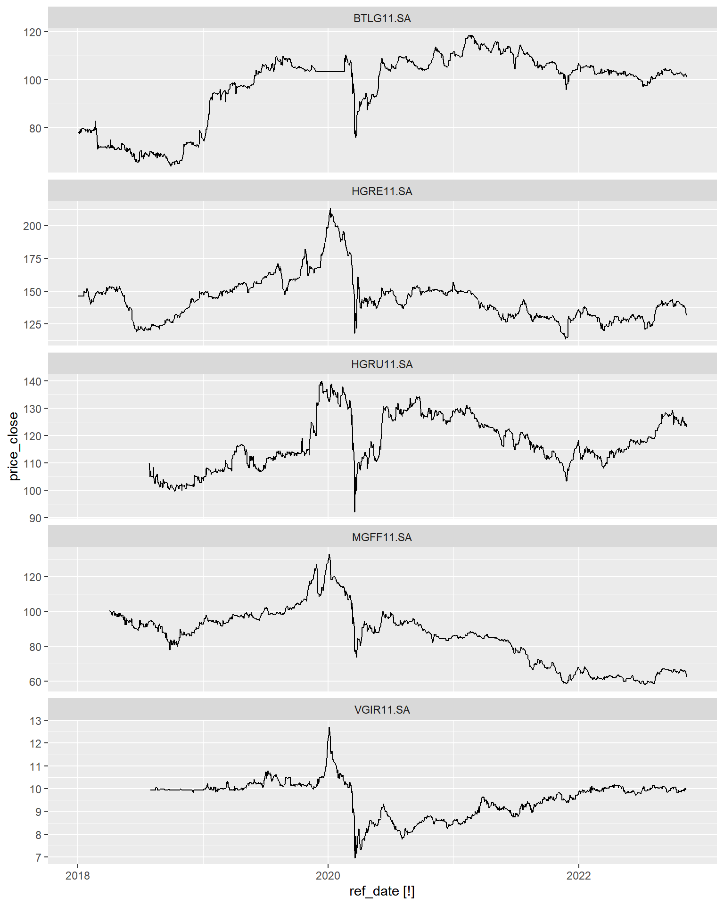
da_tsibble |>
autoplot(ret_closing_prices, colour = "black") +
facet_wrap(~ticker, scales = "free_y", ncol = 1)Warning: Removed 1 row(s) containing missing values (geom_path).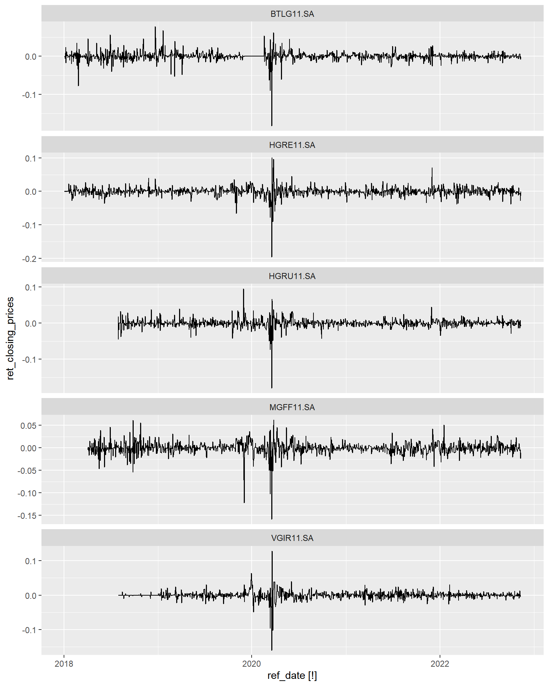
Data mínima comum a todas as séries
data_corte <- da |>
dplyr::group_by(ticker) |>
dplyr::filter(ref_date == min(ref_date)) |>
dplyr::ungroup() |>
with(max(ref_date))
data_corte[1] "2018-07-31"da_train <- da |>
dplyr::filter(ref_date > data_corte)da_tsibble |>
ACF(ret_closing_prices) |>
autoplot()Warning: Provided data has an irregular interval, results should be treated with
caution. Computing ACF by observation.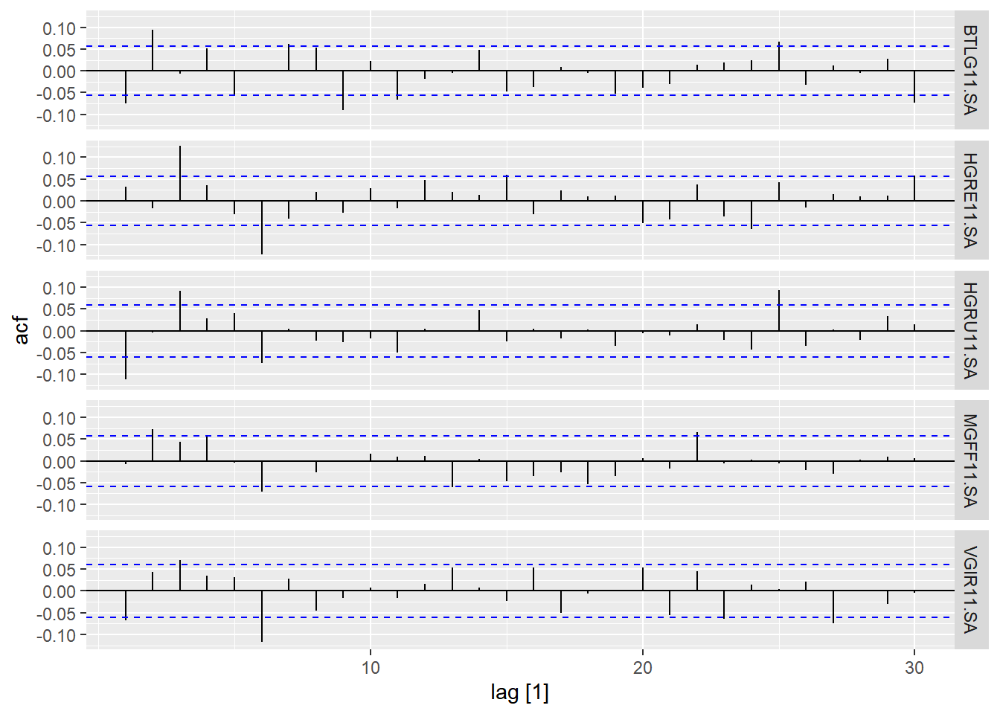
da_tsibble |>
PACF(ret_closing_prices) |>
autoplot()Warning: Provided data has an irregular interval, results should be treated with
caution. Computing ACF by observation.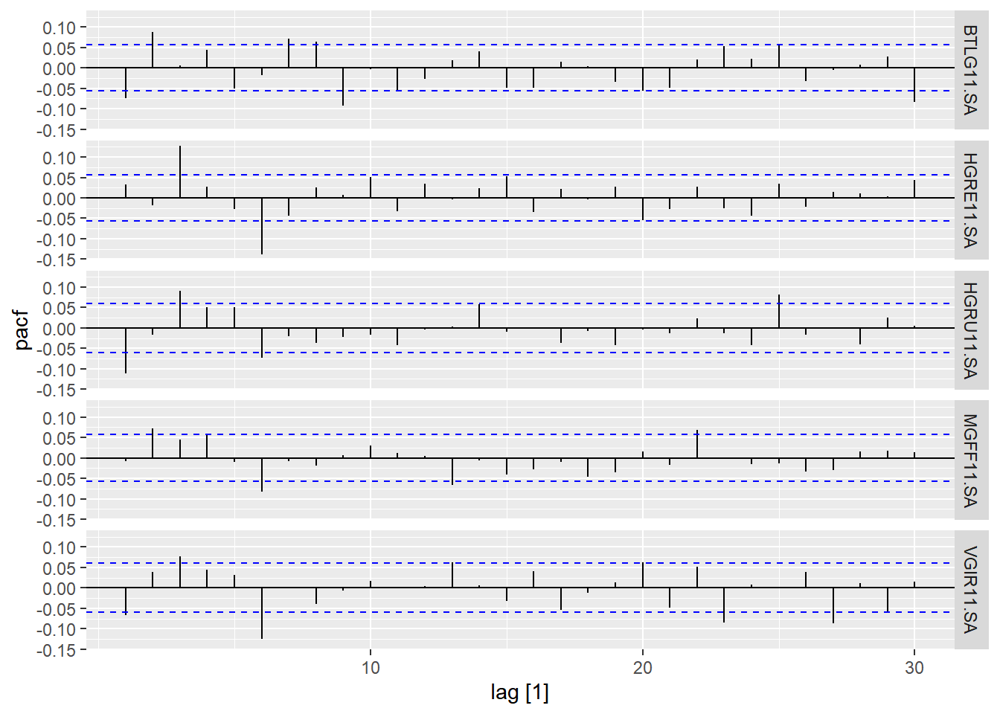
da_tsibble |>
dplyr::mutate(ret2 = ret_closing_prices^2) |>
autoplot(ret2, colour = "black") +
facet_wrap(~ticker, ncol = 1)Warning: Removed 1 row(s) containing missing values (geom_path).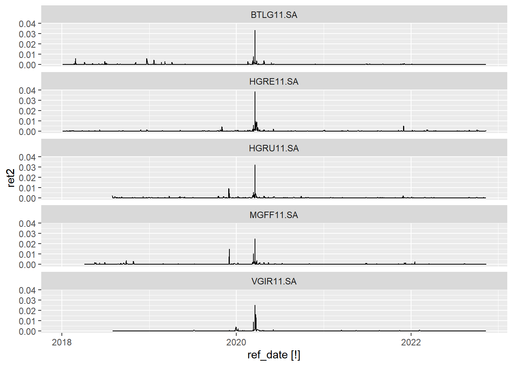
da_tsibble |>
dplyr::mutate(ret2 = ret_closing_prices^2) |>
ACF(ret2) |>
autoplot()Warning: Provided data has an irregular interval, results should be treated with
caution. Computing ACF by observation.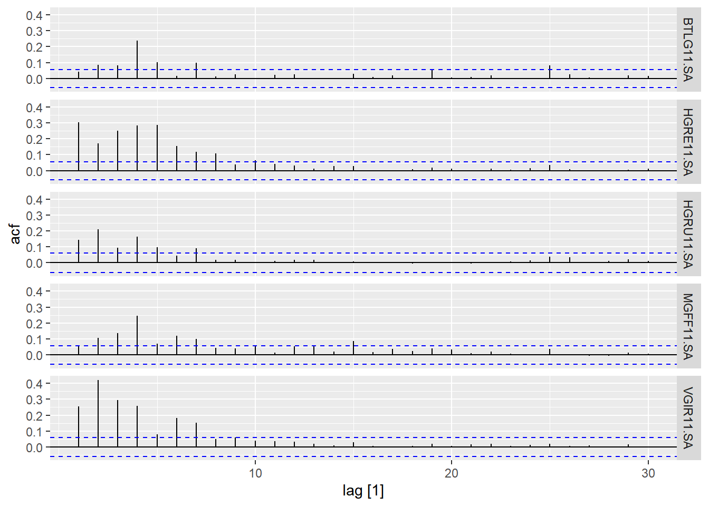
da_tsibble |>
dplyr::mutate(ret2 = ret_closing_prices^2) |>
PACF(ret2) |>
autoplot()Warning: Provided data has an irregular interval, results should be treated with
caution. Computing ACF by observation.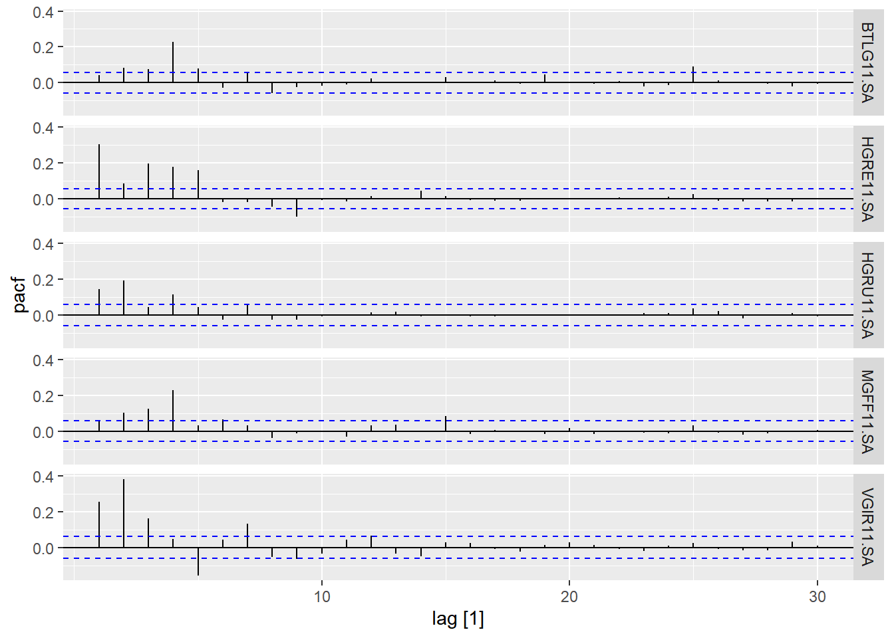
Normalidade
da_train |>
group_by(ticker) |>
summarise(
gg = list(
ggplot(cur_data(), aes(sample = ret_closing_prices)) +
geom_qq() +
geom_qq_line() +
labs(title = cur_group())
)
) |>
dplyr::pull(gg) |>
patchwork::wrap_plots()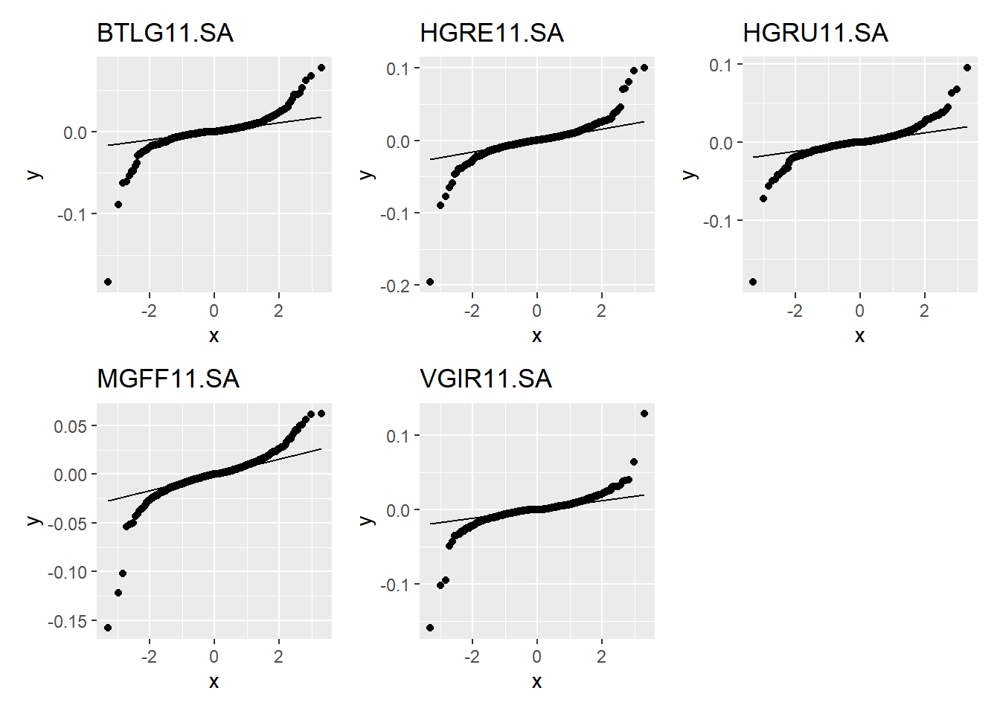
Com outra distribuição
da_train |>
group_by(ticker) |>
summarise(
gg = list(
ggplot(cur_data(), aes(sample = ret_closing_prices)) +
geom_qq(distribution = qt, dparams = list(df = 3)) +
geom_qq_line(distribution = qt, dparams = list(df = 3)) +
labs(title = cur_group())
)
) |>
dplyr::pull(gg) |>
patchwork::wrap_plots()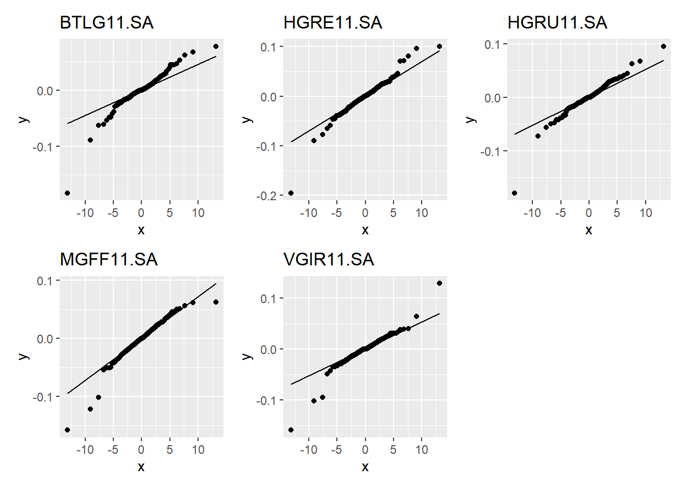
Função para ajustar um garch
garch_individual <- function(parms, ret, prog = NULL) {
if (!is.null(prog)) prog()
# daria para adicionar mais hiperparametros!!!
garch_model = ugarchspec(
variance.model = list(
model = "fGARCH",
submodel = "GARCH",
garchOrder = c(parms$m, parms$n)
),
mean.model = list(
armaOrder = c(parms$p, parms$q),
include.mean = TRUE
),
distribution.model = parms$dist
)
# as vezes ele nao converge
suppressWarnings({
fit <- ugarchfit(garch_model, data = ret)
})
fit
}Função para ajustar uma grid de garchs e pegar as informações
melhor_garch <- function(ativo, p = 0:3, q = 0:3, m = 0:2, n = 0:2, dist = "std") {
# faz uma grid de hiperparâmetros
grid <- expand_grid(p = p, q = q, m = m, n = n, dist = dist) |>
tibble::rownames_to_column("id")
# pega o retorno do ativo
ret <- da_train |>
dplyr::filter(ticker == ativo) |>
pull(ret_closing_prices)
usethis::ui_info("Ajustando modelos para {ativo}...")
progressr::with_progress({
prog <- progressr::progressor(nrow(grid))
modelos <- grid |>
group_split(id) |>
purrr::map(garch_individual, ret = ret, prog)
})
safe_info <- purrr::possibly(infocriteria, tibble::tibble())
suppressWarnings({
informacao <- purrr::map(modelos, safe_info) |>
purrr::map(tibble::as_tibble, rownames = "criteria") |>
dplyr::bind_rows(.id = "id")
})
melhores <- informacao |>
dplyr::inner_join(grid, "id") |>
tidyr::pivot_wider(names_from = criteria, values_from = V1) |>
janitor::clean_names() |>
dplyr::arrange(akaike)
usethis::ui_info(c(
"Melhor modelo:",
"p <- {melhores$p[1]}",
"q <- {melhores$q[1]}",
"m <- {melhores$m[1]}",
"n <- {melhores$n[1]}"
))
melhores
}Rodando as funções
melhores_por_ativo <- ativos |>
purrr::set_names() |>
purrr::map(melhor_garch) |>
dplyr::bind_rows(.id = "ticker")Função que ajusta o modelo e faz as previsões
prever_volatilidade <- function(parms, n_steps = 5) {
ret <- da_train |>
dplyr::filter(ticker == parms$ticker) |>
pull(ret_closing_prices)
garch_model = ugarchspec(
variance.model = list(
model = "fGARCH",
submodel = "GARCH",
garchOrder = c(parms$m, parms$n)
),
mean.model = list(
armaOrder = c(parms$p, parms$q),
include.mean = TRUE
),
distribution.model = parms$dist
)
fit <- ugarchfit(garch_model, data = ret, out.sample = n_steps - 1)
# browser()
if (parms$dist == "std") {
shape <- as.numeric(fit@fit$coef["shape"])
} else {
shape <- NA_real_
}
forecasts <- ugarchforecast(fit, n.ahead = n_steps)@forecast
tibble::tibble(
ticker = parms$ticker,
serie = as.numeric(forecasts$seriesFor),
volatilidade = as.numeric(forecasts$sigmaFor),
shape = shape
)
}Ajustando modelos finais e prevendo volatilidade futura
parametros_melhores <- melhores_por_ativo |>
group_by(ticker) |>
slice_head(n = 1) |>
ungroup()
vol_futuro <- parametros_melhores |>
group_split(ticker) |>
purrr::map(prever_volatilidade, n_steps = 1) |>
dplyr::bind_rows()
vol_futuro# A tibble: 5 × 4
ticker serie volatilidade shape
<chr> <dbl> <dbl> <dbl>
1 BTLG11.SA 0.000292 0.00905 2.50
2 HGRE11.SA 0.000190 0.0144 3.11
3 HGRU11.SA -0.000130 0.0128 2.32
4 MGFF11.SA -0.00128 0.0130 3.65
5 VGIR11.SA -0.00000968 0.00649 2.90…
Reproduzindo código daqui:
https://www.codingfinance.com/post/2018-05-31-portfolio-opt-in-r/
Versão em python
https://www.codingfinance.com/post/2018-05-31-portfolio-opt-in-python/
da_wide <- da_train |>
dplyr::select(ref_date, name = ticker, value = ret_closing_prices) |>
tidyr::pivot_wider()
da_xts <- da_wide |>
timetk::tk_xts(select = -ref_date, date_var = ref_date)mean_ret <- colMeans(da_xts, na.rm = TRUE)
print(round(mean_ret, 5))BTLG11.SA HGRE11.SA HGRU11.SA MGFF11.SA VGIR11.SA
0.00035 0.00007 0.00013 -0.00039 0.00000 Next we will calculate the covariance matrix for all these stocks. We will NOT annualize it by multiplying by 252.
cov_mat <- cov(da_xts, use = "complete.obs")
print(round(cov_mat,4)) BTLG11.SA HGRE11.SA HGRU11.SA MGFF11.SA VGIR11.SA
BTLG11.SA 1e-04 1e-04 1e-04 1e-04 0e+00
HGRE11.SA 1e-04 2e-04 1e-04 1e-04 1e-04
HGRU11.SA 1e-04 1e-04 1e-04 1e-04 1e-04
MGFF11.SA 1e-04 1e-04 1e-04 2e-04 1e-04
VGIR11.SA 0e+00 1e-04 1e-04 1e-04 1e-04Before we apply our methods to thousands of random portfolio, let us demonstrate the steps on a single portfolio.
To calculate the portfolio returns and risk (standard deviation) we will us need
set.seed(2)
# Calculate the random weights
wts <- runif(n = length(ativos))
(wts <- wts/sum(wts))[1] 0.07186944 0.27303447 0.22286964 0.06532697 0.36689948# Calculate the portfolio returns
(port_returns <- sum(wts * mean_ret))[1] 4.950717e-05# Calculate the portfolio risk
(port_risk <- sqrt(t(wts) %*% (cov_mat %*% wts))) [,1]
[1,] 0.009518973# Calculate the Sharpe Ratio
(sharpe_ratio <- port_returns/port_risk) [,1]
[1,] 0.005200893We have everything we need to perform our optimization. All we need now is to run this code on 5000 random portfolios. For that we will use a for loop.
~Before we do that, we need to create empty vectors and matrix for storing our values.~
sim_returns <- function(i) {
wts <- runif(length(ativos))
wts <- wts / sum(wts)
port_ret <- sum(wts * mean_ret)
port_sd <- as.numeric(sqrt(t(wts) %*% (cov_mat %*% wts)))
sr <- port_ret / port_sd
wts |>
purrr::set_names(ativos) |>
tibble::enframe() |>
tidyr::pivot_wider() |>
dplyr::mutate(
return = port_ret,
risk = port_sd,
sharpe = sr
)
}
portfolio_values <- purrr::map(1:5000, sim_returns) |>
bind_rows(.id = "run")
min_var <- portfolio_values[which.min(portfolio_values$risk),]
max_sr <- portfolio_values[which.max(portfolio_values$sharpe),]Lets plot the weights of each portfolio. First with the minimum variance portfolio.
min_var |>
pivot_longer(2:6) |>
mutate(name = forcats::fct_reorder(name, value)) |>
ggplot(aes(name, value)) +
geom_col() +
scale_y_continuous(labels = scales::percent) +
labs(
x = "Asset",
y = "Weight",
title = "Minimum variance portfolio weights"
)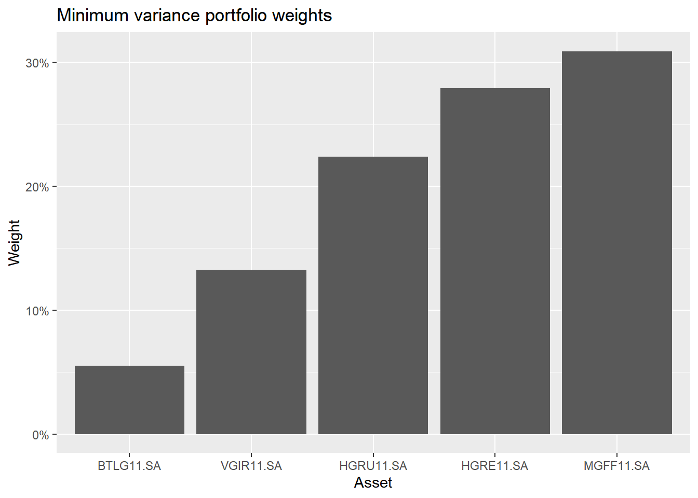
max_sr |>
pivot_longer(2:6) |>
mutate(name = forcats::fct_reorder(name, value)) |>
ggplot(aes(name, value)) +
geom_col() +
scale_y_continuous(labels = scales::percent) +
labs(
x = "Asset",
y = "Weight",
title = "Tangency portfolio weights"
)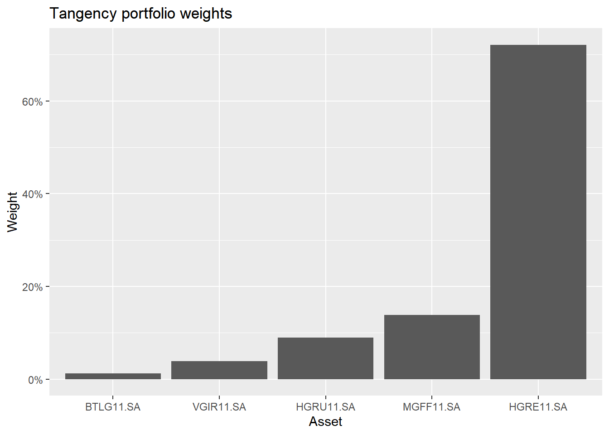
portfolio_values |>
ggplot(aes(x = risk, y = return, color = sharpe)) +
geom_point() +
theme_classic() +
scale_y_continuous(labels = scales::percent) +
scale_x_continuous(labels = scales::percent) +
labs(
x = 'Risk',
y = 'Returns',
title = "Portfolio Optimization & Efficient Frontier"
) +
geom_point(
aes(x = risk, y = return),
data = min_var,
color = 'red'
) +
geom_point(
aes(x = risk, y = return),
data = max_sr,
color = 'red'
)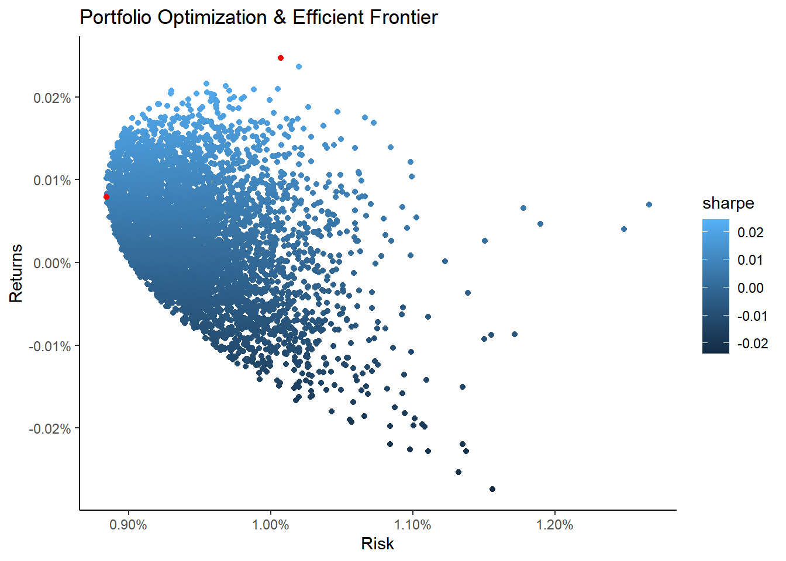
pesos_finais <- min_var |>
dplyr::select(2:6) |>
as.numeric()
rt_final <- mean(vol_futuro$serie * pesos_finais)
st_dev_final <- sqrt(pesos_finais %*% cov_mat %*% pesos_finais)
nu <- min(vol_futuro$shape)
valor_t <- qt(.95, nu)
(VaR <- rt_final + valor_t * st_dev_final / sqrt(nu/(nu-2))) [,1]
[1,] 0.008717397portfolio_returns <- da_train |>
tidyquant::tq_portfolio(
ticker,
ret_closing_prices,
weights = pesos_finais,
col_rename = "portfolio"
)Warning: `spread_()` was deprecated in tidyr 1.2.0.
ℹ Please use `spread()` instead.
ℹ The deprecated feature was likely used in the tidyquant package.
Please report the issue at
<https://github.com/business-science/tidyquant/issues>.Warning in PerformanceAnalytics::Return.portfolio(., weights = weights, : NA's
detected: filling NA's with zerosmarket_returns <- yfR::yf_get(
"^BVSP",
first_date = data_corte + 1,
type_return = "log",
freq_data = "daily",
do_complete_data = TRUE
) |>
dplyr::select(ref_date, ibov = ret_closing_prices)── Running yfR for 1 stocks | 2018-08-01 --> 2022-11-12 (1564 days) ──ℹ Downloading data for benchmark ticker ^GSPCℹ (1/1) Fetching data for ^BVSP! - not cached✔ - cache saved successfully✔ - got 1061 valid rows (2018-08-01 --> 2022-11-11)✔ - got 96% of valid prices -- You got it !ℹ Binding price dataℹ Completing data points (do_complete_data = TRUE)── Diagnostics ─────────────────────────────────────────────────────────────────✔ Returned dataframe with 1061 rows -- Well done !ℹ Using 864.4 kB at C:\Users\julio\AppData\Local\Temp\RtmpGugryW/yf_cache for 7 cache filesℹ Out of 1 requested tickers, you got 1 (100%)all_returns <- market_returns |>
dplyr::inner_join(portfolio_returns, "ref_date") |>
tidyr::drop_na()
(beta_geral <- with(all_returns, cov(portfolio, ibov) / var(ibov)))[1] 0.2333843calcular_beta <- function(ativo) {
da_train |>
dplyr::filter(ticker == ativo) |>
dplyr::inner_join(market_returns, "ref_date") |>
tidyr::drop_na() |>
with(cov(ret_closing_prices, ibov) / var(ibov))
}
betas <- purrr::map_dbl(ativos, calcular_beta) |>
purrr::set_names(ativos)
sum(betas * pesos_finais)[1] 0.2564028beta_geral[1] 0.2333843da_model <- da_wide |>
dplyr::inner_join(market_returns, "ref_date") |>
dplyr::select(-ref_date)
modelo_betas <- lm(ibov ~ . - 1, data = da_model)
broom::tidy(modelo_betas)# A tibble: 5 × 5
term estimate std.error statistic p.value
<chr> <dbl> <dbl> <dbl> <dbl>
1 BTLG11.SA 0.231 0.0456 5.07 0.000000463
2 HGRE11.SA 0.100 0.0409 2.44 0.0147
3 HGRU11.SA 0.242 0.0475 5.10 0.000000409
4 MGFF11.SA 0.244 0.0406 6.03 0.00000000232
5 VGIR11.SA 0.130 0.0463 2.80 0.00520